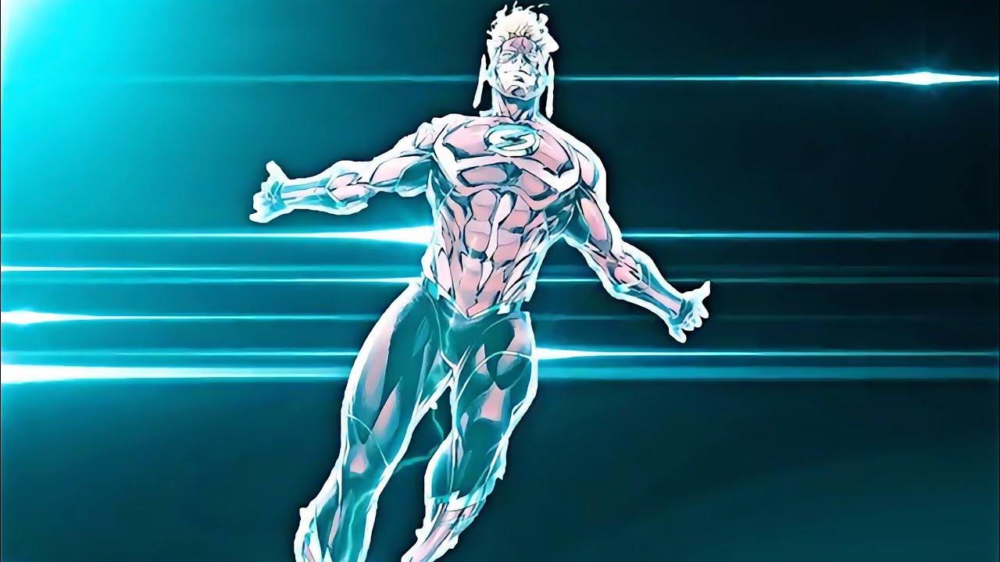
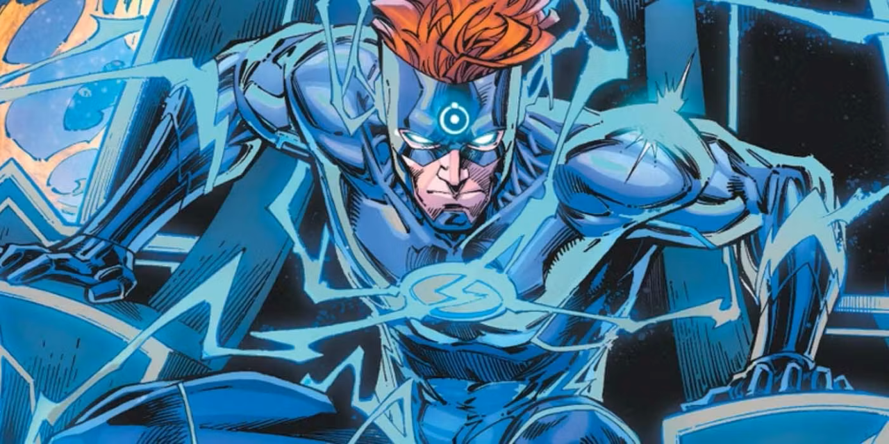
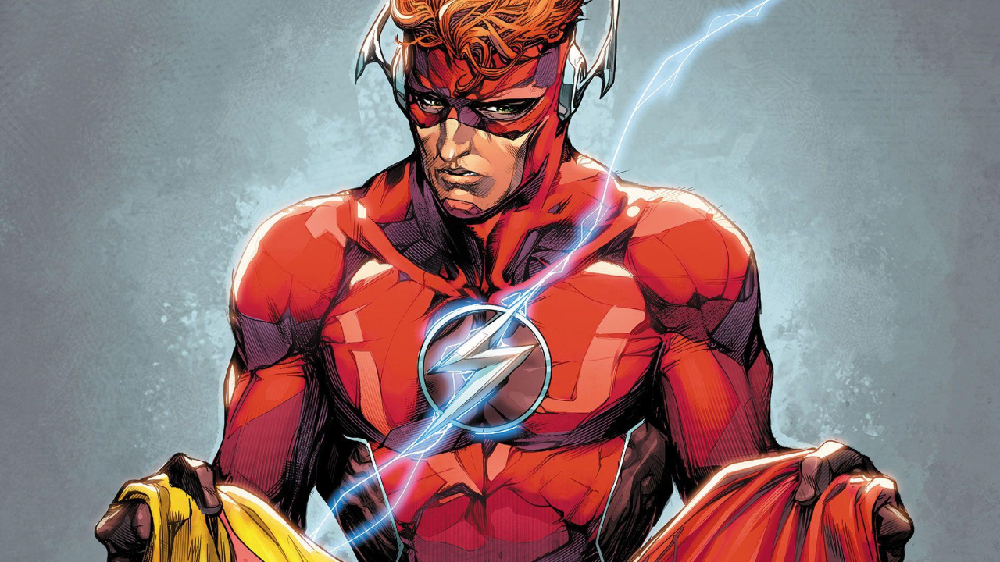

A pose da força de velocidade - "Speed Force Pose"
Essa imagem mostra Wally West em sua forma mais transcendental, flutuando em meio à energia pura da Força de Velocidade. A pose simboliza o domínio absoluto sobre o tempo e o espaço — um momento de conexão total com o poder que define os velocistas. Essa representação ganhou destaque nas redes sociais, especialmente no TikTok, onde viralizou e consolidou Wally como o Flash mais lembrado da nova geração.

Wally na Mobius Chair
Essa cena mostra Wally West sentado na lendária Cadeira de Mobius, um artefato que concede conhecimento ilimitado. O momento chamou atenção dos fãs por unir o velocista à fonte de sabedoria cósmica da DC, criando uma imagem poderosa e inesperada. A repercussão foi grande nas comunidades online, reforçando a ideia de que Wally pode ocupar papéis ainda mais grandiosos dentro da mitologia dos heróis.

"Muita coisa pode acontecer num piscar de olhos. Você pode perder tudo. Seu nome, sua reputação.
Mas eles podem ser substituídos... por determinação, força, empatia, fé... Uma renovada sensação de como você é abençoado por estar vivo. Por ter pessoas que te amam, que se importam com você, mas isso só acontece se você não desistir antes do milagre. Quando você percebe que amanhã é um novo dia. Que amanhã traz esperança, e esperança é onde encontramos a redenção."